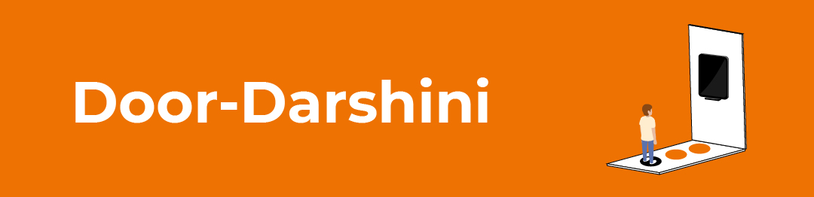
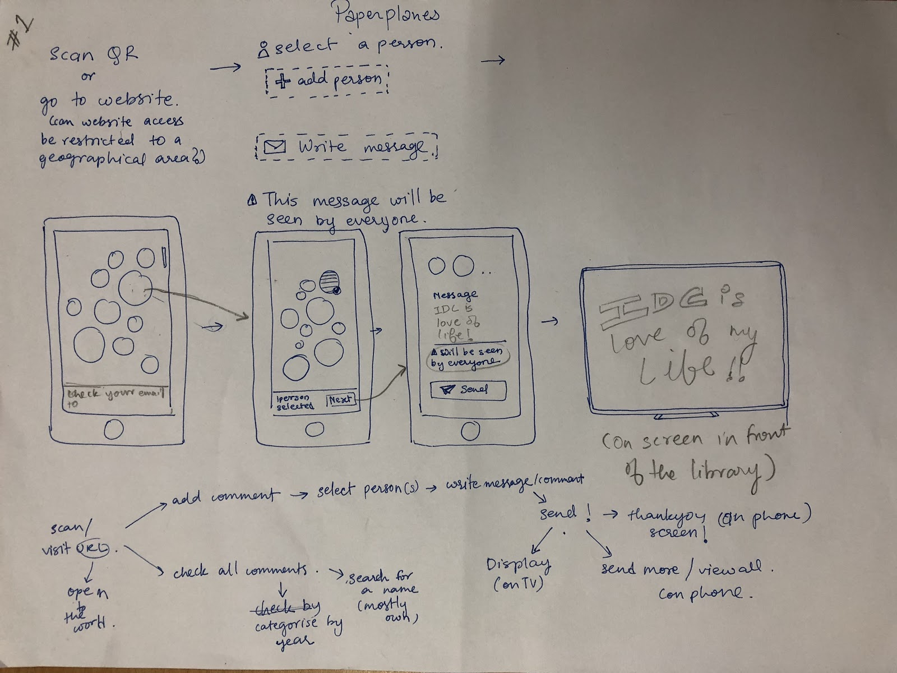

door-darshini
An interactive installation for Golden jubilee of my Design School.

Industrial Design Centre (IDC) at the Indian Institute of Technology (IIT Bombay) offers an excellent
environment for academics, research and applications in the field of design. The centre interacts with
industries and institutions for promotion and awareness of design. This year being the Diamond jubliee
of the school, IDC invites alumni and their families to revisit their alma-matter.
Human brain percieves and processes any data through sensories. Different media emit data which are sensed by the human sensories
and the data is been decoded by the brain itself. These data are analysed either cognitively or sensitively by the brain.
Over the past decade interfaces are being developed by the limitations of technology and tools avaialble. But to the contrast humans
bother about the data which never resides inside technology. It is just enabled in a different media by the technology.
As part of the course in the school, prof. Ravi poovaiah challenged us to build playful technologies to play, to stimulate and to experience.
Few Facts:
1. The sensorial hierarchy of sensory data decoding and cognitive data decoding are in reverse order.
2. Children in the first three months of birth are activated with only olfactory sense.
3. Humans try and interact with data only through senses and which starts with the hierarchy of vision and ends with smell.
In the realm of screens and devices challenge was to design interfaces(installation) which involves the users senses and
involves them in the information collection in a playful way. Interdisciplinary groups were made in the class to design a 'Playful Media appplication for the users using their sensories.'
We started with throwing keywords onto the white board related to 50 years of IDC. Brief was given to design
playful system which are unexpected things to do and ivolves sensories in the setup of 50 Years of IDC.
SENSORIES
Sex,
Orgasmic,
Blocked Nose,
Meditation,
Colours,
Rhythm,
Butterflies,
Petrichor,
Pedicure,
Fresh air,
Air Condition,
Fidgety,
Casettes,
Thorns,
Tastebuds,
Blind,
Movement,
Blue,
Stink,
Descafe Chai,
nausea,
Motion Sickness,
Home Kitchen,
Olfactory,
Tactile,
Hungry,
Mood Swings,
Sixth sense,
Conscious,
Transcendence,
Temptations,
Bird Song,
PMS,
Shivering,
Elevated,
Blood Rush,
Tingling,
Velvet,
Brain Freeze,
Goosebumps,
Thirst,
Tooth sensitivity.
CELEBRATION
Selfies,
Culture,
Photography,
Auspicious,
Red Carpet,
Flowers,
Networking,
Party,
Anticipation,
Get Together,
Jumping Balls,
Sweets,
Memories,
Holi,
Fireworks,
Discounts,
Lights,
Make Up,
Wastage,
Religious,
Gate Crashing,
Music,
Gala,
Advertisements,
Pollution,
Cake,
Special Food,
Culture,
Dancing,
Nostalgia,
Birthdays,
Garlands,
Confetti,
Love,
Farewell,
AfterEffects(Sad).
50 YEARS OF IDC
Break Ups & make Ups,
Contribution,
Banners,
Designers,
Awards,
Typography,
Knowledge,
Connections,
Legacy,
Homecoming,
Publicity,
Dogs,
Dedications,
Vintage,
Family,
Talks,
Innovation,
Alumni,
Reunion,
Visiting Cards,
Half Century,
Giving Back to society,
Project Reports,
Presentations,
Success,
Locations,
Reminiscence,
Ideas,
Plans,
Memento,
Junta,
Events,
Achievements,
Gossip,
Nicknames,
References,
Welcome,
Hostel-Life,
Moving On,
Jargons,
Stories,
Posters,
Juniors,
Updates,
International,
Professionals,
Guest List.
UNEXPECTED THINGS TO DO
Pen-Pals,
Secret Santa,
Postcards,
Cameo,
Surprise Test,
Apocalypse,
Talents,
Adrenaline,
Revelation,
Hallucination,
Back in theatre,
Break Outs,
Easter eggs,
Awkward Pictures,
Time machine,
X marks the spot,
Anticipation,
Illusions,
Night Out,
Santa Class,
Designers,
Glass,
Entropy,
Treasure,
Designers,
Glass,
Memes,
Secret,
Vision,
Drama,
Innov ation,
Magic Tricks,
Mystery,
Hunt,
Shock,
Unprepardness,
Surprise,
Suspense,
Tension,
Mirage,
Untangle,
Guests,
Pranks,
Guests,
Tragedy,
Candids,
Slot Machine,
Reveal,
Twists,
Kids,
Joke,
Gifts,
Memory re-creation,
News,
Energetic,
Alice in wonderland,
Early sleep,
Deja Vu,
Changes,
Cliffhanger,
Abrupt,
Random,
Mirror Palace,
Flash Mob,
Adventure Sports,
Bomb blast,
Probability.
After this the keywords are written on cards which are later sorted into groups and a top hierarchial card is forme dfor each category.
These categories form the references for building the playful part of the installation.

Later this, I started looking for interesting installations done outside. Few of the interesting ones are:
1.Coco-Cola: Small worlds together
https://www.youtube.com/watch?v=ts_4vOUDImE&feature=youtu.be
2.LINES: A Interactive sound installation
https://www.youtube.com/watch?v=ts_4vOUDImE&feature=youtu.be
Then we spoke with an alumni of the school regarding what are his thoughts on the golden jubilee of IDC.
He told us that he is expeting to meet his peers mostly and re-live their olden moments.
Directions
Nostalgia:
People associate memories with the different physical spaces,
Fun-ifying:
Making mundane tasks that people go through more fun,
Games:
Igniting team spirit by gamifying an aspect of the experience of the event.
Audience
International Conferences
Typo Day
Alumni Meet
Ideation

The Design task and the exploration of cognition of the target user group allowed me to understand how users understand or organise their activities and interact with interfaces. A week engagement with students and campus and existing bike-sharing service left me with a great experience and new skills.
Thanks for your time for making till the end.
Go back to Home for more works.